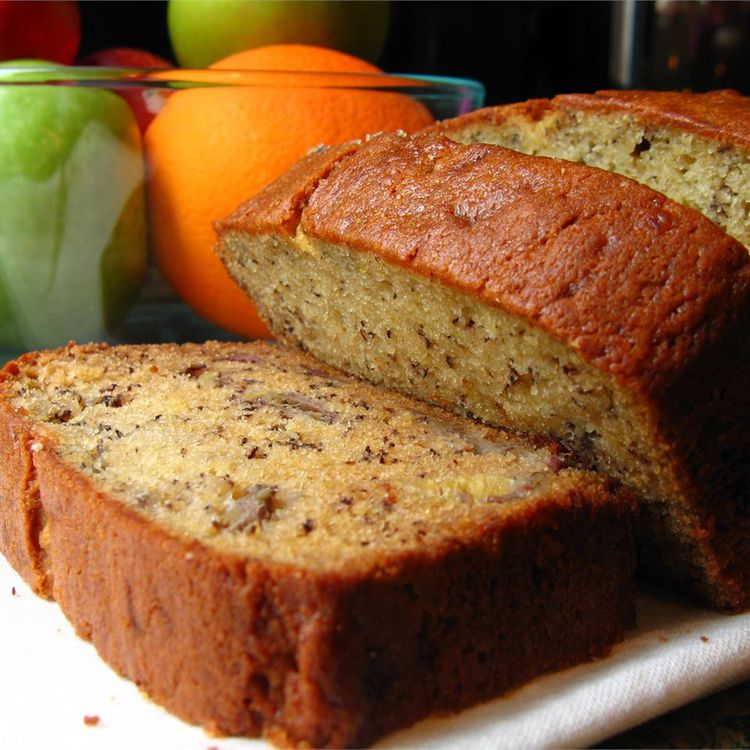

Janet's Rich Banana Bread

Janet's Rich Banana Bread Recipe
Janet's Rich Banana Bread is the perfect treat because it's not too sweet! Janet's Rich Banana Bread is unique because it incorporates sour cream to prevent dry texture.
- 1 cup white sugar
- 1/2 cup butter, melted
- 2 eggs
- 1 teaspoon vanilla extract
- 1 1/2 cups all-purpose flour
- 1 teaspoon baking soda
- 1/2 teaspoon salt
- 1/2 cup sour cream
- 1/2 cup chopped walnuts
- 2 medium bananas, sliced or mashed